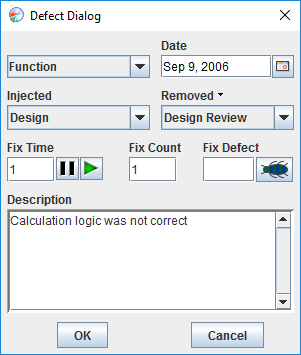

Step 3: Designing the program Step 3: Designing the program
Step 3: Designing the program Step 3: Designing the programThe PSP provides Development scripts for all the levels. To access the development script for this program, we can click the web browser's back button to go back to the Planning script, then click the appropriate hyperlink near the bottom of the page. Or we can click the script button on the Process Dashboard toolbar to view the full list of scripts and forms provided by the current project, and choose "PSP2.1 Development Script" from the menu.
While designing this program, we will be sure to keep the dashboard's timer running. This can be confirmed by noticing the state of the play/pause button. For more information on the play/pause button, see the play/pause button help topic.
Once finished with the program design, we click the completion checkbox to mark the design phase complete.

The dashboard will move us to the next phase, which is design review. We perform a thorough review of our design, and find several defects. To enter each defect, we click the defect button.

The defect dialog appears, allowing us to enter all the pertinent data about the defect.

After you enter the data for a defect, click the OK button to save it. Then, if you need to enter another defect, click the defect button on the main dashboard window again. For more information about entering defects into the dashboard, see the Entering Defects help topic.
Of course, several more defects were found during the review, but we won't show them all.
Once the design review is finished, we click the completion checkbox and move along to coding.